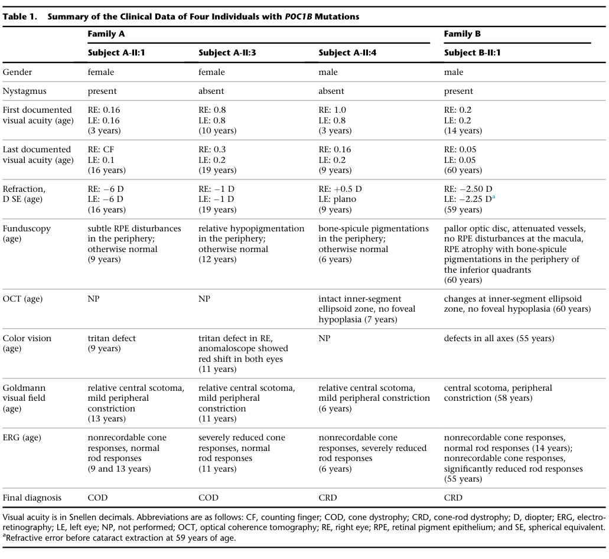

Cone-rod dystrophy 20 is a rare autosomal recessive inherited retinal dystrophy caused by biallelic variants in POC1B, which encodes POC1 centriolar protein B, a core centriole protein that localises to the basal body of the photoreceptor connecting cilium. The retinal disease is cone-predominant: most reported patients have a generalized or peripheral cone dystrophy with absent or reduced light-adapted electroretinogram responses and normal or near-normal rod responses, and a minority progress to cone-rod dystrophy. Onset is usually in childhood to early adulthood with reduced central vision, photophobia and impaired colour vision, but some patients have poor vision and nystagmus from early infancy, an achromatopsia-like presentation that later deteriorates. The course is slowly progressive. A distinctive clinical feature is that the fundus often looks normal, so diagnosis rests on electroretinography and on optical coherence tomography, which shows loss of the interdigitation zone and a blurred ellipsoid zone. The cone-dominated, normal-fundus presentation can mimic incomplete achromatopsia. One consanguineous family with a homozygous frameshift variant additionally had male infertility with oligoasthenoteratozoospermia, consistent with the role of centrioles in the sperm flagellum.
Ask a research question about Cone-rod dystrophy 20. OpenScientist will conduct autonomous deep research using the Disorder Mechanisms Knowledge Base and PubMed literature (typically 10-30 minutes).
Do not include personal health information in your question. Questions and results are cached in your browser's local storage.
name: Cone-rod dystrophy 20
creation_date: "2026-10-08T00:00:00Z"
category: Mendelian
synonyms:
- CORD20
- POC1B cone-rod dystrophy
- POC1B-associated retinopathy
- cone-rod dystrophy caused by mutation in POC1B
- cone-rod dystrophy type 20
description: >-
Cone-rod dystrophy 20 is a rare autosomal recessive inherited retinal
dystrophy caused by biallelic variants in POC1B, which encodes POC1
centriolar protein B, a core centriole protein that localises to the basal
body of the photoreceptor connecting cilium. The retinal disease is
cone-predominant: most reported patients have a generalized or peripheral
cone dystrophy with absent or reduced light-adapted electroretinogram
responses and normal or near-normal rod responses, and a minority progress to
cone-rod dystrophy. Onset is usually in childhood to early adulthood with
reduced central vision, photophobia and impaired colour vision, but some
patients have poor vision and nystagmus from early infancy, an
achromatopsia-like presentation that later deteriorates. The course is
slowly progressive. A distinctive clinical feature is that the
fundus often looks normal, so diagnosis rests on electroretinography and on
optical coherence tomography, which shows loss of the interdigitation zone and
a blurred ellipsoid zone. The cone-dominated, normal-fundus presentation can
mimic incomplete achromatopsia. One consanguineous family with a homozygous
frameshift variant additionally had male infertility with
oligoasthenoteratozoospermia, consistent with the role of centrioles in the
sperm flagellum.
disease_term:
preferred_term: cone-rod dystrophy 20
term:
id: MONDO:0014427
label: cone-rod dystrophy 20
parents:
- Cone-rod dystrophy
- Inherited retinal dystrophy
- Ciliopathy
references:
- reference: PMID:25018096
title: Disruption of the basal body protein POC1B results in autosomal-recessive cone-rod dystrophy.
- reference: PMID:24945461
title: Novel recessive cone-rod dystrophy caused by POC1B mutation.
- reference: PMID:31390656
title: "Phenotypical Characteristics of POC1B-Associated Retinopathy in Japanese Cohort: Cone Dystrophy With Normal Funduscopic Appearance."
- reference: PMID:34065499
title: Clinical Characteristics of POC1B-Associated Retinopathy and Assignment of Pathogenicity to Novel Deep Intronic and Non-Canonical Splice Site Variants.
- reference: PMID:25044745
title: Mutation of POC1B in a severe syndromic retinal ciliopathy.
- reference: PMID:40170356
title: Severe Joubert syndrome in family with homozygous POC1B p.Arg106Pro variant is due to a co-inherited deep-intronic mutation in the neighboring CEP290 gene.
- reference: PMID:37070736
title: Homozygous frameshift variant in POC1B causes male infertility with oligoasthenoteratozoospermia in human and mice.
- reference: PMID:39543170
title: An interaction network of inner centriole proteins organised by POC1A-POC1B heterodimer crosslinks ensures centriolar integrity.
inheritance:
- name: Autosomal recessive inheritance
inheritance_term:
preferred_term: Autosomal recessive inheritance
term:
id: HP:0000007
label: Autosomal recessive inheritance
description: >-
Biallelic POC1B variants, homozygous in consanguineous families and
compound heterozygous elsewhere. Reported alleles include missense,
in-frame deletion, nonsense, frameshift, canonical, non-canonical and
deep-intronic splice variants.
evidence:
- reference: PMID:25018096
reference_title: Disruption of the basal body protein POC1B results in autosomal-recessive cone-rod dystrophy.
supports: SUPPORT
evidence_source: HUMAN_CLINICAL
snippet: >-
in three siblings with autosomal-recessive cone dystrophy or cone-rod dystrophy and compound-heterozygous POC1B mutations
explanation: >-
Homozygous and compound heterozygous POC1B variants in two families with
autosomal recessive cone or cone-rod dystrophy.
- reference: PMID:24945461
reference_title: Novel recessive cone-rod dystrophy caused by POC1B mutation.
supports: SUPPORT
evidence_source: HUMAN_CLINICAL
snippet: >-
The disease gene mapped to a less than 2-megabase recessive locus at 12q21.33 with a logarithm of odds score of 3.92. At the locus, we identified a homozygous missense POC1B p.R106P mutation
explanation: >-
Independent linkage to a recessive locus in a consanguineous family,
with a homozygous POC1B variant at the locus.
prevalence:
- population: Worldwide
measure_type: CASES_IN_LITERATURE
prevalence_class: ULTRA_RARE
notes: >-
No population estimate exists. POC1B accounted for 7 of 548 families in the
Japan Eye Genetics Consortium inherited retinal disease database, which is a
diagnostic-yield figure in a referral cohort and not a population rate.
evidence:
- reference: PMID:31390656
reference_title: "Phenotypical Characteristics of POC1B-Associated Retinopathy in Japanese Cohort: Cone Dystrophy With Normal Funduscopic Appearance."
supports: SUPPORT
evidence_source: HUMAN_CLINICAL
snippet: >-
Whole-exome sequencing with targeted analyses identified homozygous or compound heterozygous mutations of the POC1B gene in 7 of 548 families in the JEGC database.
explanation: >-
The share of a national retinal-dystrophy cohort explained by POC1B,
showing the disorder is rare.
- reference: PMID:34065499
reference_title: Clinical Characteristics of POC1B-Associated Retinopathy and Assignment of Pathogenicity to Novel Deep Intronic and Non-Canonical Splice Site Variants.
supports: SUPPORT
evidence_source: HUMAN_CLINICAL
snippet: >-
Mutations in POC1B are a rare cause of inherited retinal degeneration.
explanation: >-
States that the disorder is a rare cause of inherited retinal disease.
pathophysiology:
- name: Biallelic POC1B Loss-of-Function Variants
biological_scale: MOLECULAR
description: >-
Biallelic POC1B variants. Missense and in-frame alleles such as p.Arg106Pro
and p.Gln67del lost basal-body localization in overexpressed RPE1 cells and
lost the interaction with FAM161A, although p.Arg106Pro localized normally to
the centrosome in a separate HEK293T assay, so the localization defect is
assay-dependent; nonsense, frameshift and splice alleles,
including a deep-intronic variant that activates a pseudoexon, are
predicted to remove the protein.
genes:
- preferred_term: POC1B
term:
id: hgnc:30836
label: POC1B
molecular_functions:
- preferred_term: POC1A-POC1B heterodimerization
modifier: DECREASED
term:
id: GO:0046982
label: protein heterodimerization activity
evidence:
- reference: PMID:39543170
reference_title: An interaction network of inner centriole proteins organised by POC1A-POC1B heterodimer crosslinks ensures centriolar integrity.
supports: SUPPORT
evidence_source: IN_VITRO
snippet: >-
We demonstrate the importance of an interaction network organised by POC1A-POC1B heterodimers within the centriole lumen, where the WD40 domain of POC1B localises close to the centriole wall, while the POC5-interacting WD40 of POC1A resides in the centriole lumen.
explanation: >-
POC1B acts as one half of the POC1A-POC1B heterodimer that organises the
inner-scaffold interaction network; this is the molecular activity lost
when POC1B is absent or mislocalised.
- reference: PMID:39543170
reference_title: An interaction network of inner centriole proteins organised by POC1A-POC1B heterodimer crosslinks ensures centriolar integrity.
supports: SUPPORT
evidence_source: IN_VITRO
snippet: >-
Disruption of POC1A or POC1B leads to centriole microtubule defects and deletion of both genes causes centriole disintegration.
explanation: >-
Loss of POC1B alone is sufficient to damage centriole microtubules.
- reference: PMID:25018096
reference_title: Disruption of the basal body protein POC1B results in autosomal-recessive cone-rod dystrophy.
supports: SUPPORT
evidence_source: IN_VITRO
snippet: >-
Upon overexpression of POC1B in human TERT-immortalized retinal pigment epithelium 1 cells, the encoded wild-type protein localized to the basal body of the primary cilium, whereas this localization was lost for p.Arg106Pro and p.Gln67del variant forms of POC1B.
explanation: >-
Patient missense and in-frame alleles lose basal-body localization.
- reference: PMID:25044745
reference_title: Mutation of POC1B in a severe syndromic retinal ciliopathy.
supports: REFUTE
evidence_source: IN_VITRO
snippet: >-
In HEK293T cells transfected with a plasmid containing the p.Arg106Pro mutation, the protein localized normally at the centrosome
explanation: >-
Contradicts the localization part of the claim for p.Arg106Pro in a
different cell system; the FAM161A-binding defect is not addressed here.
- reference: PMID:34065499
reference_title: Clinical Characteristics of POC1B-Associated Retinopathy and Assignment of Pathogenicity to Novel Deep Intronic and Non-Canonical Splice Site Variants.
supports: SUPPORT
evidence_source: IN_VITRO
snippet: >-
Splicing analysis revealed that the non-canonical splice site variant c.561-3T>C leads to exon skipping while the novel deep intronic variant c.1033-327T>A causes pseudoexon activation.
explanation: >-
Splice-assay demonstration that intronic patient alleles disrupt the
POC1B transcript.
downstream:
- target: Photoreceptor Basal Body and Connecting Cilium Defect
description: >-
POC1B normally sits at the basal body adjacent to the photoreceptor
connecting cilium and binds FAM161A there; the patient alleles lose both
the localization and the interaction.
causal_link_type: DIRECT
evidence:
- reference: PMID:25018096
reference_title: Disruption of the basal body protein POC1B results in autosomal-recessive cone-rod dystrophy.
supports: SUPPORT
evidence_source: IN_VITRO
snippet: >-
This was confirmed in coimmunoprecipitation and colocalization assays, which both showed loss of FAM161A interaction with p.Arg106Pro and p.Gln67del variant forms of POC1B.
explanation: >-
Patient alleles lose the interaction with FAM161A, a ciliopathy protein
at the base of the photoreceptor connecting cilium.
- target: Sperm Centriole and Flagellum Defect
description: >-
A separate branch of the same lesion in the male germline, reported in
one family carrying a homozygous frameshift allele.
causal_link_type: DIRECT
evidence:
- reference: PMID:37070736
reference_title: Homozygous frameshift variant in POC1B causes male infertility with oligoasthenoteratozoospermia in human and mice.
supports: SUPPORT
evidence_source: HUMAN_CLINICAL
snippet: >-
Transcript and protein analyses of biological samples from the two patients carrying the variant showed that POC1B protein is lost in sperm cells.
explanation: >-
The frameshift allele removes POC1B from patient sperm.
- name: Photoreceptor Basal Body and Connecting Cilium Defect
biological_scale: CELLULAR
description: >-
POC1B is a centriolar WD40-repeat protein that, together with POC1A,
maintains centriole integrity. In photoreceptors it localizes to the basal
body and centriole adjacent to the connecting cilium, the specialized
primary cilium through which outer-segment proteins are transported. Loss of
POC1B function disrupts this sensory cilium; in zebrafish knockdown the
connecting cilia are shortened and reduced and the outer segments are
shortened.
cellular_components:
- preferred_term: ciliary basal body
term:
id: GO:0036064
label: ciliary basal body
- preferred_term: photoreceptor connecting cilium
term:
id: GO:0032391
label: photoreceptor connecting cilium
biological_processes:
- preferred_term: cilium assembly
modifier: DECREASED
term:
id: GO:0060271
label: cilium assembly
cell_types:
- preferred_term: retinal cone cell
term:
id: CL:0000573
label: retinal cone cell
- preferred_term: retinal rod cell
term:
id: CL:0000604
label: retinal rod cell
evidence:
- reference: PMID:25044745
reference_title: Mutation of POC1B in a severe syndromic retinal ciliopathy.
supports: SUPPORT
evidence_source: IN_VITRO
snippet: >-
In human and mouse retina, POC1B localized to the basal body and centriole adjacent to the connecting cilium of photoreceptors and in synapses of the outer plexiform layer.
explanation: >-
Places POC1B at the photoreceptor basal body. Graded IN_VITRO because the
localization comes from immunostaining of human and mouse retinal tissue
sections, which is ex vivo, not an in vivo model experiment. The same paper's
attribution of a Joubert syndrome phenotype to POC1B was later withdrawn
(see notes); this localization finding is independent of that claim.
- reference: PMID:23015594
reference_title: Poc1A and Poc1B act together in human cells to ensure centriole integrity.
supports: SUPPORT
evidence_source: IN_VITRO
snippet: >-
Hence, Poc1A and Poc1B play redundant, but essential, roles in generation of stable centrioles, but Poc1B may have additional independent functions during cell cycle progression.
explanation: >-
Establishes the centriole-integrity function of POC1B that underlies the
basal-body defect.
- reference: PMID:26188096
reference_title: Knockdown of poc1b causes abnormal photoreceptor sensory cilium and vision impairment in zebrafish.
supports: SUPPORT
evidence_source: MODEL_ORGANISM
snippet: >-
These data suggest that poc1b is required for normal development and ciliogenesis of retinal photoreceptor sensory cilia and other cilia.
explanation: >-
Knockdown evidence that POC1B is required for photoreceptor sensory cilium
formation.
downstream:
- target: Progressive Cone-Predominant Photoreceptor Degeneration
description: >-
A defective photoreceptor sensory cilium leads to shortened outer
segments and photoreceptor dysfunction.
causal_link_type: DIRECT
evidence:
- reference: PMID:25018096
reference_title: Disruption of the basal body protein POC1B results in autosomal-recessive cone-rod dystrophy.
supports: SUPPORT
directness: INDIRECT
evidence_source: MODEL_ORGANISM
snippet: >-
Morpholino-oligonucleotide-induced knockdown of poc1b translation in zebrafish resulted in a dose-dependent small-eye phenotype, impaired optokinetic responses, and decreased length of photoreceptor outer segments.
explanation: >-
Loss of poc1b in zebrafish shortens photoreceptor outer segments and
impairs visual responses; indirect because it is a morpholino
knockdown in a non-human model.
- reference: PMID:25018096
reference_title: Disruption of the basal body protein POC1B results in autosomal-recessive cone-rod dystrophy.
supports: SUPPORT
quote_role: PRIMARY_RESULT
evidence_source: OTHER
snippet: >-
Altogether, this study demonstrates that POC1B mutations result in a defect of the photoreceptor sensory cilium and thus affect cone and rod photoreceptors.
explanation: >-
The authors' synthesis of the human genetic, cell and zebrafish data
linking the ciliary defect to photoreceptor disease.
- name: Progressive Cone-Predominant Photoreceptor Degeneration
biological_scale: TISSUE
description: >-
Photoreceptor degeneration affecting cones first and most. Most patients
have generalized or peripheral cone dystrophy with normal dark-adapted
responses; rod responses become subnormal in some patients and a minority
progress to frank cone-rod dystrophy. Structurally the outer retina shows
loss of the interdigitation zone (cone outer segment tips) and a blurred
ellipsoid zone, often with a normal-appearing fundus. Severity ranges from
early-childhood onset to a late-onset mild form with relatively preserved
cone function.
cell_types:
- preferred_term: retinal cone cell
term:
id: CL:0000573
label: retinal cone cell
locations:
- preferred_term: retina
term:
id: UBERON:0000966
label: retina
evidence:
- reference: PMID:31390656
reference_title: "Phenotypical Characteristics of POC1B-Associated Retinopathy in Japanese Cohort: Cone Dystrophy With Normal Funduscopic Appearance."
supports: SUPPORT
evidence_source: HUMAN_CLINICAL
snippet: >-
Generalized or peripheral cone dystrophy with normal funduscopic appearance is the representative phenotype of POC1B-associated retinopathy in our cohort.
explanation: >-
The cone-predominant pattern across a seven-family cohort.
- reference: PMID:33657974
reference_title: A homozygous POC1B variant causes recessive cone-rod dystrophy.
supports: SUPPORT
evidence_source: HUMAN_CLINICAL
snippet: >-
Follow-up three years later showed progression to a cone-rod dystrophy.
explanation: >-
Documents progression from cone dystrophy to cone-rod dystrophy.
- reference: PMID:37227616
reference_title: A mild form of POC1B-associated retinal dystrophy with relatively preserved cone system function.
supports: SUPPORT
evidence_source: HUMAN_CLINICAL
snippet: >-
We reported the case of an older patient with POC1B-associated retinopathy, demonstrating late-onset visual decrease, good visual acuity, and relatively preserved cone system function.
explanation: >-
The mild end of the severity range.
downstream:
- target: Cone/cone-rod dystrophy
causal_link_type: DIRECT
- target: Undetectable light-adapted electroretinogram
causal_link_type: DIRECT
- target: Photoreceptor outer segment loss on macular OCT
causal_link_type: DIRECT
- target: Reduced visual acuity
causal_link_type: DIRECT
- target: Photophobia
causal_link_type: DIRECT
- target: Dyschromatopsia
causal_link_type: DIRECT
- target: Central scotoma
causal_link_type: DIRECT
- target: Nystagmus
causal_link_type: DIRECT
- name: Sperm Centriole and Flagellum Defect
biological_scale: CELLULAR
description: >-
In the one family reported with both cone-rod dystrophy and
oligoasthenoteratozoospermia, POC1B protein was absent from sperm, and mice
knocked in for the same frameshift allele showed abnormal acrosome and
flagellum formation.
cell_types:
- preferred_term: sperm
term:
id: CL:0000019
label: sperm
biological_processes:
- preferred_term: sperm flagellum assembly
modifier: DECREASED
term:
id: GO:0120316
label: sperm flagellum assembly
- preferred_term: acrosome assembly
modifier: DECREASED
term:
id: GO:0001675
label: acrosome assembly
locations:
- preferred_term: testis
term:
id: UBERON:0000473
label: testis
evidence:
- reference: PMID:37070736
reference_title: Homozygous frameshift variant in POC1B causes male infertility with oligoasthenoteratozoospermia in human and mice.
supports: SUPPORT
evidence_source: MODEL_ORGANISM
snippet: >-
Additionally, testicular histology and transmission electron microscopy analysis of the testes and sperm indicated that Poc1b mutation results in abnormal formation of acrosomes and flagella.
explanation: >-
Knock-in mice carrying the patient allele show defective acrosome and
flagellum formation.
downstream:
- target: Male infertility
causal_link_type: DIRECT
evidence:
- reference: PMID:37070736
reference_title: Homozygous frameshift variant in POC1B causes male infertility with oligoasthenoteratozoospermia in human and mice.
supports: SUPPORT
evidence_source: MODEL_ORGANISM
snippet: >-
Notably, poc1bc.151delG/c.151delG KI male mice presented with OAT phenotype.
explanation: >-
The patient allele reproduces oligoasthenoteratozoospermia in mice.
phenotypes:
- name: Cone/cone-rod dystrophy
category: Ophthalmologic
diagnostic: true
description: >-
Cone dystrophy or cone-rod dystrophy, usually with onset in childhood to
early adulthood and a slowly progressive course. Night blindness was not
reported in the original consanguineous family.
phenotype_term:
preferred_term: Cone/cone-rod dystrophy
term:
id: HP:0000548
label: Cone/cone-rod dystrophy
clinical_course: PROGRESSIVE
evidence:
- reference: PMID:24945461
reference_title: Novel recessive cone-rod dystrophy caused by POC1B mutation.
supports: SUPPORT
evidence_source: HUMAN_CLINICAL
snippet: >-
POC1B is a novel gene for a new disease typical of CORD except that patients did not report night blindness. The clinical course was slowly progressive.
explanation: >-
Cone-rod dystrophy with a slowly progressive course and without
reported night blindness.
- reference: PMID:34065499
reference_title: Clinical Characteristics of POC1B-Associated Retinopathy and Assignment of Pathogenicity to Novel Deep Intronic and Non-Canonical Splice Site Variants.
supports: SUPPORT
evidence_source: HUMAN_CLINICAL
snippet: >-
All patients displayed a similar, slowly progressive retinopathy (cone dystrophy or cone-rod dystrophy) with normal funduscopy but disrupted outer retinal layers on optical coherence tomography and variable age of onset.
explanation: >-
Cone or cone-rod dystrophy with normal fundus in an independent series.
- name: Undetectable light-adapted electroretinogram
category: Ophthalmologic
diagnostic: true
description: >-
Full-field photopic responses are reduced to non-recordable while scotopic
responses are normal or subnormal, the electrophysiological signature of a
cone-predominant dystrophy.
phenotype_term:
preferred_term: Undetectable light-adapted electroretinogram
term:
id: HP:0030465
label: Undetectable light-adapted electroretinogram
frequency: VERY_FREQUENT
evidence:
- reference: PMID:24945461
reference_title: Novel recessive cone-rod dystrophy caused by POC1B mutation.
supports: SUPPORT
evidence_source: HUMAN_CLINICAL
snippet: >-
Cone response was nonrecordable in all patients, whereas rod response was nonrecordable in the eldest patient and subnormal in the others.
explanation: >-
Non-recordable cone responses in every affected family member.
- reference: PMID:37246743
reference_title: Phenotypic and genotypic features of POC1B-associated cone dystrophy.
supports: SUPPORT
evidence_source: HUMAN_CLINICAL
snippet: >-
Full-field electroretinography demonstrated undetectable light-adapted responses and normal dark-adapted responses in all patients.
explanation: >-
Undetectable light-adapted with preserved dark-adapted responses in two
further families.
- reference: PMID:31390656
reference_title: "Phenotypical Characteristics of POC1B-Associated Retinopathy in Japanese Cohort: Cone Dystrophy With Normal Funduscopic Appearance."
supports: SUPPORT
evidence_source: HUMAN_CLINICAL
snippet: >-
The full-field photopic ERGs were reduced or extinguished with normal scotopic responses.
explanation: >-
Reduced or extinguished photopic responses across the eight patients of
the seven-family cohort; the phenotype is bound to the undetectable form,
which is the commonest, and some patients have reduced rather than absent
responses.
- name: Photoreceptor outer segment loss on macular OCT
category: Ophthalmologic
description: >-
Optical coherence tomography shows absence of the interdigitation zone
(cone outer segment tip line) and a blurred ellipsoid zone, often with a
normal fundus on ophthalmoscopy.
phenotype_term:
preferred_term: Photoreceptor outer segment loss on macular OCT
term:
id: HP:0030610
label: Photoreceptor outer segment loss on macular OCT
frequency: VERY_FREQUENT
evidence:
- reference: PMID:31390656
reference_title: "Phenotypical Characteristics of POC1B-Associated Retinopathy in Japanese Cohort: Cone Dystrophy With Normal Funduscopic Appearance."
supports: SUPPORT
evidence_source: HUMAN_CLINICAL
snippet: >-
Optical coherence tomography revealed an absence of the interdigitation zone and blurred ellipsoid zone in the posterior pole, but the foveal structures were preserved in three cases.
explanation: >-
Loss of the cone outer segment tip line on OCT.
- reference: PMID:24945461
reference_title: Novel recessive cone-rod dystrophy caused by POC1B mutation.
supports: SUPPORT
evidence_source: HUMAN_CLINICAL
snippet: >-
In all patients, a disrupted inner segment/outer segment line and the external limiting membrane were noted as a single blurry line at the central fovea, and the cone outer segment tip line was absent.
explanation: >-
Absent cone outer segment tip line in every patient of the original
family.
- name: Reduced visual acuity
category: Ophthalmologic
description: >-
Decreased central vision, the usual presenting complaint.
phenotype_term:
preferred_term: Reduced visual acuity
term:
id: HP:0007663
label: Reduced visual acuity
evidence:
- reference: PMID:29220607
reference_title: Case of cone dystrophy with normal fundus appearance associated with biallelic POC1B variants.
supports: SUPPORT
evidence_source: HUMAN_CLINICAL
snippet: >-
The patient was a 20-year-old Japanese man whose chief complaint was a progressive decrease in his central vision.
explanation: >-
Progressive loss of central vision as the presenting symptom.
- reference: PMID:37246743
reference_title: Phenotypic and genotypic features of POC1B-associated cone dystrophy.
supports: SUPPORT
evidence_source: HUMAN_CLINICAL
snippet: >-
Ophthalmic examination showed decreased Snellen visual acuities (range: 20/100-20/300) and color vision bilaterally.
explanation: >-
Reduced visual acuity in three affected men.
- name: Photophobia
category: Ophthalmologic
phenotype_term:
preferred_term: Photophobia
term:
id: HP:0000613
label: Photophobia
evidence:
- reference: PMID:24945461
reference_title: Novel recessive cone-rod dystrophy caused by POC1B mutation.
supports: SUPPORT
evidence_source: HUMAN_CLINICAL
snippet: >-
The clinical phenotype was typical CORD with photophobia, decreased central vision, and dyschromatopsia.
explanation: >-
Photophobia reported in the original family.
- reference: PMID:34065499
reference_title: Clinical Characteristics of POC1B-Associated Retinopathy and Assignment of Pathogenicity to Novel Deep Intronic and Non-Canonical Splice Site Variants.
supports: SUPPORT
evidence_source: HUMAN_CLINICAL
snippet: >-
Other symptoms were decreased visual acuity and photophobia.
explanation: >-
Photophobia in an independent series.
- name: Dyschromatopsia
category: Ophthalmologic
phenotype_term:
preferred_term: Dyschromatopsia
term:
id: HP:0007641
label: Dyschromatopsia
evidence:
- reference: PMID:24945461
reference_title: Novel recessive cone-rod dystrophy caused by POC1B mutation.
supports: SUPPORT
evidence_source: HUMAN_CLINICAL
snippet: >-
The clinical phenotype was typical CORD with photophobia, decreased central vision, and dyschromatopsia.
explanation: >-
Impaired colour vision in the original family.
- reference: PMID:39568138
reference_title: A novel homozygous missense variant in POC1B causes cone dystrophy in a consanguineous Pakistani family.
supports: SUPPORT
evidence_source: HUMAN_CLINICAL
snippet: >-
The proband, a 63-years old male, showed severely reduced day vision, a visual acuity of counting fingers (CF), color vision deficiency, high myopia and photophobia.
explanation: >-
Colour vision deficiency in a further family.
- name: Central scotoma
category: Ophthalmologic
phenotype_term:
preferred_term: Central scotoma
term:
id: HP:0000603
label: Central scotoma
evidence:
- reference: PMID:39568138
reference_title: A novel homozygous missense variant in POC1B causes cone dystrophy in a consanguineous Pakistani family.
supports: SUPPORT
evidence_source: HUMAN_CLINICAL
snippet: >-
Full visual field tests showed bilateral central scotoma, while single visual field tests indicated bilateral generalized depression of the visual field.
explanation: >-
Bilateral central scotoma on perimetry.
- reference: PMID:25018096
reference_title: Disruption of the basal body protein POC1B results in autosomal-recessive cone-rod dystrophy.
supports: SUPPORT
evidence_source: HUMAN_CLINICAL
snippet: >-
relative central scotoma, mild peripheral constriction (13 years)
explanation: >-
Goldmann perimetry row of the clinical table; all four patients in the
gene-discovery report had a relative or absolute central scotoma.
- name: Nystagmus
category: Ophthalmologic
description: >-
Nystagmus, sometimes present from early infancy together with poor visual
acuity, giving an achromatopsia-like presentation; it was present in two of
the four patients in the gene-discovery report.
phenotype_term:
preferred_term: Nystagmus
term:
id: HP:0000639
label: Nystagmus
onset:
onset_category: INFANTILE
evidence:
- reference: PMID:25018096
reference_title: Disruption of the basal body protein POC1B results in autosomal-recessive cone-rod dystrophy.
supports: SUPPORT
evidence_source: HUMAN_CLINICAL
snippet: >-
in another sibling and in one isolated individual, poor visual acuity and nystagmus were present from early infancy, suggesting a form of ACHM.
explanation: >-
Nystagmus from early infancy in two of four affected individuals, which
supports the infantile onset recorded here.
- reference: PMID:25018096
reference_title: Disruption of the basal body protein POC1B results in autosomal-recessive cone-rod dystrophy.
supports: SUPPORT
evidence_source: HUMAN_CLINICAL
snippet: >-
The proband (A-II:1) of family A presented with reduced visual acuity in early infancy and mild nystagmus.
explanation: >-
Individual-level report of early-infancy nystagmus.
- reference: PMID:34065499
reference_title: Clinical Characteristics of POC1B-Associated Retinopathy and Assignment of Pathogenicity to Novel Deep Intronic and Non-Canonical Splice Site Variants.
supports: SUPPORT
evidence_source: HUMAN_CLINICAL
snippet: >-
All patients showed impaired cone function leading to reduced visual acuity, color vision disturbances, photophobia or nystagmus.
explanation: >-
Nystagmus among the cone-dysfunction symptoms in an independent series.
- name: High myopia
category: Ophthalmologic
description: >-
High myopia was reported in the Pakistani proband (PMID:39568138) and in
one affected child of a Saudi sibship (PMID:41293231), where an affected
adult in the same report also had myopia. Myopia is common in the general
population and no study has tested whether it is part of the POC1B
phenotype, so it is recorded without a frequency and is not wired to a
mechanism.
phenotype_term:
preferred_term: High myopia
term:
id: HP:0011003
label: High myopia
evidence:
- reference: PMID:39568138
reference_title: A novel homozygous missense variant in POC1B causes cone dystrophy in a consanguineous Pakistani family.
supports: SUPPORT
evidence_source: HUMAN_CLINICAL
snippet: >-
The proband, a 63-years old male, showed severely reduced day vision, a visual acuity of counting fingers (CF), color vision deficiency, high myopia and photophobia.
explanation: >-
High myopia in a homozygous POC1B patient.
- reference: PMID:41293231
reference_title: "POC1B-associated cone-rod dystrophy with bilateral optic disc swelling: A novel clinical observation."
supports: SUPPORT
evidence_source: HUMAN_CLINICAL
snippet: >-
Cycloplegic refraction showed high myopia (4 diopters and 8 diopters for the right and left eyes, respectively) with mild astigmatism.
explanation: >-
High myopia in an affected child of a second family with a homozygous
POC1B frameshift.
- name: Male infertility
category: Reproductive
description: >-
Oligoasthenoteratozoospermia with male infertility, reported together with
cone-rod dystrophy in two brothers homozygous for a POC1B frameshift
variant. Whether it accompanies other POC1B genotypes is not known.
phenotype_term:
preferred_term: Male infertility
term:
id: HP:0003251
label: Male infertility
evidence:
- reference: PMID:37070736
reference_title: Homozygous frameshift variant in POC1B causes male infertility with oligoasthenoteratozoospermia in human and mice.
supports: SUPPORT
evidence_source: HUMAN_CLINICAL
snippet: >-
Here, whole-exome sequencing was performed to identify a homozygous frameshift variant (c.151delG) in POC1B in the two brothers who had been diagnosed with both CORD and OAT from a consanguineous family.
explanation: >-
Two brothers with both cone-rod dystrophy and
oligoasthenoteratozoospermia.
genetic:
- name: POC1B
association: Causal biallelic variant
gene_term:
preferred_term: POC1B
term:
id: hgnc:30836
label: POC1B
notes: >-
The recurrent p.Arg106Pro allele was also reported homozygous in a family
with Joubert syndrome, early-onset severe retinal dystrophy and polycystic
kidney disease, which led to POC1B being proposed as a Joubert syndrome
gene. Long-read genome sequencing later found a homozygous deep-intronic
CEP290 variant, 1.28 Mb away and co-inherited in cis, that fully explains
the syndromic features, and the authors withdrew the Joubert attribution.
The syndromic presentation is therefore not part of this disease. No ClinGen
gene-disease validity record was found for POC1B.
evidence:
- reference: PMID:25018096
reference_title: Disruption of the basal body protein POC1B results in autosomal-recessive cone-rod dystrophy.
supports: SUPPORT
evidence_source: HUMAN_CLINICAL
snippet: >-
in POC1B, encoding POC1 centriolar protein B, in three siblings with autosomal-recessive cone dystrophy or cone-rod dystrophy
explanation: >-
Identification of POC1B as the causal gene.
- reference: PMID:40170356
reference_title: Severe Joubert syndrome in family with homozygous POC1B p.Arg106Pro variant is due to a co-inherited deep-intronic mutation in the neighboring CEP290 gene.
supports: SUPPORT
evidence_source: HUMAN_CLINICAL
snippet: >-
EOSRD and PKD can fully be ascribed to this CEP290 variant, whose effect outshines the "background" non-syndromic POC1B retinopathy and co-segregates with the severe syndromic phenotype. Our novel findings in this family no longer justify POC1B as a JBTS gene.
explanation: >-
Withdraws the earlier attribution of Joubert syndrome to POC1B and
restricts the POC1B phenotype to non-syndromic retinopathy.
environmental: []
treatments:
- name: Low-vision support and photophobia management
description: >-
No disease-modifying treatment exists. Management is supportive: low-vision
aids, tinted or filtered lenses for photophobia, and periodic
ophthalmological follow-up. Genetic testing is what separates the disorder
from incomplete achromatopsia, which it resembles.
therapeutic_modality: DEVICE
treatment_term:
preferred_term: supportive care
term:
id: NCIT:C15747
label: Supportive Care
target_phenotypes:
- preferred_term: Reduced visual acuity
term:
id: HP:0007663
label: Reduced visual acuity
- preferred_term: Photophobia
term:
id: HP:0000613
label: Photophobia
animal_models:
- name: Zebrafish poc1b morphant
species: Zebrafish
genotype: poc1b translation-blocking morpholino knockdown
publication: PMID:25018096
description: >-
Morpholino knockdown of poc1b produces small eyes, impaired optokinetic
responses and shortened photoreceptor outer segments, partially rescued by
wild-type but not patient-allele human POC1B mRNA.
modeled_mechanisms:
- target: Photoreceptor Basal Body and Connecting Cilium Defect
relationship: PARTIALLY_RECAPITULATES
fidelity: LOW
description: >-
Knockdown shortens photoreceptor sensory cilia and outer segments.
limitations: >-
Transient morpholino knockdown during development rather than a stable
germline allele, so it models a developmental ciliary defect and not the
slowly progressive adult-onset degeneration seen in patients. The
morphants also have ciliopathy features (curved body axis, heart defects)
that patients do not show.
evidence:
- reference: PMID:25018096
reference_title: Disruption of the basal body protein POC1B results in autosomal-recessive cone-rod dystrophy.
supports: SUPPORT
evidence_source: MODEL_ORGANISM
snippet: >-
These ocular phenotypes could partially be rescued by wild-type human POC1B mRNA, but not by c.199_201del and c.317C>G mutant human POC1B mRNAs.
explanation: >-
Allele-specific rescue ties the zebrafish phenotype to the patient
variants.
- reference: PMID:26188096
reference_title: Knockdown of poc1b causes abnormal photoreceptor sensory cilium and vision impairment in zebrafish.
supports: SUPPORT
evidence_source: MODEL_ORGANISM
snippet: >-
In addition, ciliopathy-associated developmental defects, such as small eyes, curved body axis, heart defects, and shortened cilia in Kupffer's vesicle, were observed as well.
explanation: >-
Documents the broader developmental ciliopathy features of the
morphants, which are the main limitation of the model.
- name: Poc1b c.151delG knock-in mouse
species: Mouse
genotype: Poc1b c.151delG homozygous knock-in
publication: PMID:37070736
description: >-
CRISPR knock-in of the frameshift allele found in two brothers with
cone-rod dystrophy and oligoasthenoteratozoospermia.
modeled_mechanisms:
- target: Sperm Centriole and Flagellum Defect
relationship: RECAPITULATES
fidelity: MODERATE
description: >-
Male knock-in mice have oligoasthenoteratozoospermia with abnormal
acrosome and flagellum formation.
limitations: >-
The abstract reports the reproductive phenotype only; a retinal phenotype
in these mice is not described there, so the model's relevance to the
cone-rod dystrophy is not established from this source.
evidence:
- reference: PMID:37070736
reference_title: Homozygous frameshift variant in POC1B causes male infertility with oligoasthenoteratozoospermia in human and mice.
supports: SUPPORT
evidence_source: MODEL_ORGANISM
snippet: >-
Notably, poc1bc.151delG/c.151delG KI male mice presented with OAT phenotype.
explanation: >-
The knock-in reproduces the human sperm phenotype.
datasets: []
notes: >-
Two features recur in the literature and are easy to miss. First, the fundus
is normal or nearly normal in most reported patients, and the disease has
been initially diagnosed as incomplete achromatopsia; electroretinography and
OCT are needed to recognise it. Second, rod function is often normal, so many
patients are described as having cone dystrophy rather than cone-rod
dystrophy; MONDO and OMIM name the disease cone-rod dystrophy 20 after the
first reported families, and the entry covers the whole cone-predominant
spectrum. Bilateral optic disc swelling with normal lumbar-puncture opening
pressure has been reported in two siblings of one family (PMID:41293231);
it is not recorded as a phenotype here because it rests on a single family
and no HPO term distinguishes non-papilledema disc swelling. No GeneReviews
chapter covers this disease.
Deep research results are used as seeds for research; they do not undergo the same validation as the main records and may contain errors. How we use deep research.
Review round 1: Cone-rod_Dystrophy_20 · 2026-10-11T21:39:22Z · View source
Changes made in response to the first review of PR 13706. Molecular function: POC1B's pathophysiology node now binds GO:0046982 protein heterodimerization activity (modifier DECREASED). The evidence is the 2024 study showing that POC1A-POC1B heterodimers organise the inner centriole scaffold (PMID:39543170). QuickGO lists only generic protein binding (GO:0005515) as an experimental molecular-function annotation for POC1B, so the heterodimerization term was chosen as the most specific sourced activity. Phenotypes: added Nystagmus (HP:0000639) with infantile onset, citing PMID:25018096 (early-infancy nystagmus in 2 of 4 patients) and PMID:34065499. The description now mentions the achromatopsia-like early-infancy presentation. Added High myopia (HP:0011003) from PMID:39568138 and PMID:41293231. It is left unwired and has no frequency, because no study tests whether myopia is part of the POC1B phenotype. Frequency VERY_FREQUENT was set on the light-adapted ERG and the OCT phenotypes, where the cited series report the finding in all patients. A central-scotoma table row from PMID:25018096 was added as evidence. Male infertility stays at HP:0003251, because HPO has no single oligoasthenoteratozoospermia term (a search returned only separate count, motility and morphology terms). Other: the supportive treatment modality is now DEVICE. The PMID:25044745 retinal immunostaining item is regraded to IN_VITRO, since it is ex vivo tissue staining. quote_role PRIMARY_RESULT was added to the Roosing synthesis sentence. Deep research: a falcon report was run and committed (research/Cone-rod_Dystrophy_20-deep-research-falcon.md). All 5 of its references resolved, none unresolved. The single term-validation flag is a placeholder label ('if available') attached to the correct MONDO ID. just preflight-dr could not run because the local MONDO build is absent and was not downloaded, given limited disk. As a manual named-entity check, the report names POC1B 47 times and no other causal gene, and it describes the correct families. Reconciliation against the report added a REFUTE item: Beck et al. found p.Arg106Pro localized normally to the centrosome in HEK293T cells, so the node description now calls the localization defect assay-dependent. The report also cites a 2024 Mexican IRD cohort (DOI:10.1186/s12886-023-03276-7) listing one homozygous POC1B frameshift; it was not added, because the finding sits in a table, not the abstract. Validated with just validate, validate-terms, count-verified-snippets, the offline gates, check-gene-activity-grounding (ref mode), compliance-connectivity, check-coarse-phenotypes and validate-disorders.
Create: Cone-rod_Dystrophy_20 · 2026-10-08T15:41:14Z · View source
New entry for cone-rod dystrophy 20 (MONDO:0014427), caused by biallelic POC1B variants. Kept as a standalone Disease: MONDO has it as a leaf under cone-rod dystrophy and no existing entry covers POC1B. Curated directly from PubMed literature; no deep-research report was run. Sources are the two 2014 gene-discovery papers (PMID:25018096, PMID:24945461), the Japanese seven-family cohort (PMID:31390656), further case series and case reports (PMID:34065499, 37246743, 33657974, 29220607, 39568138, 37227616), the POC1A/POC1B centriole study (PMID:23015594), the zebrafish knockdown studies (PMID:25018096, 26188096), and the oligoasthenoteratozoospermia family plus knock-in mouse (PMID:37070736). Lump/split: the reported Joubert-like presentation with homozygous p.Arg106Pro (PMID:25044745) was not split out and not recorded as a phenotype, because the same group later found a co-inherited deep-intronic CEP290 variant that fully explains the syndromic features and withdrew the Joubert attribution (PMID:40170356). This is recorded in the genetic notes. A two-sibling report of optic disc swelling (PMID:41293231) is mentioned in notes only. Pathograph: POC1B variants -> photoreceptor basal body / connecting cilium defect -> cone-predominant photoreceptor degeneration -> retinal phenotypes, with a separate branch to the sperm flagellum defect and male infertility. No GeneReviews chapter or ClinGen gene-disease validity record exists for POC1B. The treatment entry (supportive care) is uncited because no study evaluates treatment. Validated with just validate, validate-terms, count-verified-snippets, the offline entity-ref, causal-target, duplicate-key and enum gates, and validate-disorders.
Question: You are an expert researcher providing comprehensive, well-cited information.
Provide detailed information focusing on: 1. Key concepts and definitions with current understanding 2. Recent developments and latest research (prioritize 2023-2024 sources) 3. Current applications and real-world implementations 4. Expert opinions and analysis from authoritative sources 5. Relevant statistics and data from recent studies
Format as a comprehensive research report with proper citations. Include URLs and publication dates where available. Always prioritize recent, authoritative sources and provide specific citations for all major claims.
Please provide a comprehensive research report on Cone-rod dystrophy 20 covering all of the disease characteristics listed below. This report will be used to populate a disease knowledge base entry. Be thorough and cite primary literature (PMID preferred) for all claims.
For each section, suggested databases/resources are listed. These are the first places you should search for information on each topic.
Search first: OMIM, Orphanet, ICD-10/ICD-11, MeSH, PubMed
Search first: PubMed, Cochrane Library, UpToDate, clinical guidelines, ClinVar, ClinGen, GWAS Catalog, PheGenI, CTD, CDC, WHO, epidemiological databases
Search first: PubMed, Cochrane Library, clinical trial databases, GWAS Catalog, gnomAD, WHO, CDC, nutrition databases
Search first: CTD, PubMed, PheGenI, GxE databases
Search first: HPO (Human Phenotype Ontology), OMIM, Orphanet, PubMed, clinicaltrials.gov, MedDRA, SNOMED CT, DECIPHER, LOINC
For each phenotype, provide: - Phenotype type: symptoms, clinical signs, physical manifestations, behavioral changes, or laboratory abnormalities
For symptoms/signs: HPO, OMIM, Orphanet, PubMed For behavioral changes: HPO, DSM, RDoC (Research Domain Criteria), PubMed For laboratory abnormalities: LOINC, SNOMED CT, LabTests Online, PubMed - Phenotype characteristics: Search first: OMIM, Orphanet, HPO, PubMed - Age of symptom onset (neonatal, childhood, adult-onset, late-onset) - Symptom severity (mild, moderate, severe, variable) - Symptom progression (stable, progressive, episodic, fluctuating) - Frequency among affected individuals (percentage or qualitative) - Quality of life impact: Effects on daily functioning and well-being (per-phenotype when possible) Search first: EQ-5D database, SF-36, WHO QOL databases, PubMed - Suggest HPO (Human Phenotype Ontology) terms for each phenotype
Search first: OMIM, ClinVar, HGMD, Ensembl, NCBI Gene
Search first: ENCODE, Roadmap Epigenomics, MethBase, DiseaseMeth
Search first: DECIPHER, ClinVar, ECARUCA, UCSC Genome Browser
Search first: CTD (Comparative Toxicogenomics Database), TOXNET, PubMed, EPA databases
Search first: CDC databases, WHO, PubMed, NHANES
Search first: NCBI Taxonomy, ViPR, BV-BRC, MicrobeDB, GIDEON
Present this section as an ordered causal chain first, then the detail below. Open with a numbered sequence of mechanistic steps running from the initiating lesion (mutation, exposure, infection) to the clinical manifestation, one step per line, each naming what it causes next. State the causal verb explicitly ("leads to", "results in") and say where a step is inferred rather than demonstrated. Where the mechanism branches, show the branch. The categories below are a checklist of what to cover within those steps, not the organizing structure — a step may draw on several of them, and a category may contribute to several steps.
Search first: KEGG, Reactome, WikiPathways, PathBank, BioCyc
Search first: Gene Ontology (GO), Reactome, KEGG, PubMed
Search first: UniProt, PDB (Protein Data Bank), InterPro, Pfam, AlphaFold
Search first: KEGG, BioCyc, HMDB (Human Metabolome Database), BRENDA
Search first: ImmPort, Immunome Database, IEDB, Gene Ontology
Search first: PubMed, Gene Ontology, Reactome
Search first: BRENDA, UniProt, KEGG, OMIM, PubMed
Search first: ENCODE, Roadmap Epigenomics, MethBase, DiseaseMeth
For each mechanism, describe: - The causal chain from initial trigger to clinical manifestation - Which mechanisms are upstream vs downstream - What cell types and biological processes are involved - Suggest GO terms for biological processes and CL terms for cell types
Search first: Uberon, FMA (Foundational Model of Anatomy), OMIM, HPO, ICD-11, MeSH, SNOMED CT
Search first: Uberon, Human Protein Atlas, Cell Ontology, Human Cell Atlas, CellMarker, PanglaoDB
Search first: Gene Ontology (Cellular Component), UniProt, Human Protein Atlas
Search first: OMIM, Orphanet, HPO, PubMed
Search first: Disease registries, longitudinal cohort databases, natural history studies, PubMed, Orphanet, OMIM
Search first: Orphanet, CDC, WHO, GBD (Global Burden of Disease), national registries, SEER, disease registries
Search first: GTR (Genetic Testing Registry), GeneReviews, ClinGen
For each treatment, suggest NCIT (NCI Thesaurus) clinical-intervention terms where applicable.
Search first: CDC vaccine schedules, WHO immunization, FDA vaccine database
Search first: CDC, WHO, behavioral intervention databases, Cochrane Library
Search first: NSGC resources, ACMG guidelines, GeneReviews
Search first: Clinical guidelines, FDA approvals, PubMed
Search first: NCBI Taxonomy
Search first: VBO (Vertebrate Breed Ontology)
Search first: NCBI Gene
Structure your response as a comprehensive narrative organized by the sections above. For each section, provide: - Factual content with specific details (numbers, percentages, gene names, variant nomenclature) - Ontology term suggestions (HPO, GO, CL, UBERON, CHEBI, NCIT, MONDO) where applicable - Evidence citations with PMIDs - Direct quotes from abstracts to support key claims - Clear indication when information is not available or not applicable for this disease
This report will be used to populate a disease knowledge base entry with: - Pathophysiology descriptions with causal chains - Gene/protein annotations (HGNC, GO terms) - Phenotype associations (HP terms) with frequencies - Cell type involvement (CL terms) - Anatomical locations (UBERON terms) - Chemical entities (CHEBI terms) - Treatment annotations (NCIT terms) - Evidence items with PMIDs and exact abstract quotes - Epidemiology, prognosis, diagnostic, and prevention information - Animal model descriptions with phenotype recapitulation details
Scope and evidence standard. Cone-rod dystrophy 20 (CORD20) is a rare, autosomal-recessive POC1B-associated retinal disorder. Its best-documented presentation is progressive cone dysfunction, sometimes followed by rod dysfunction. Evidence remains concentrated in small clinical series and experimental models; findings for cone-rod dystrophy generally, or for a different POC1B-associated syndrome, must not automatically be assigned to CORD20. The observations below derive from published, aggregated research—not an individual electronic health record. (roosing2014disruptionofthe pages 1-2, roosing2014disruptionofthe pages 4-5, beck2014mutationofpoc1b pages 1-2)
Definition. CORD20 belongs to the inherited retinal dystrophies. Cone-predominant disease impairs central visual acuity and color vision; when rods become involved, peripheral vision and night vision can also deteriorate. Its clinical spectrum includes presentations diagnosed initially as cone dystrophy or achromatopsia-like cone dysfunction before progression becomes evident. The original investigators described their families as having nonsyndromic autosomal-recessive cone dystrophy or cone-rod dystrophy. (roosing2014disruptionofthe pages 1-2, roosing2014disruptionofthe pages 5-7, roosing2014disruptionofthe pages 10-11)
Knowledge-base identifiers: disease OMIM 615973; causal-gene OMIM 614784, POC1B; supplied MONDO:0014427, whose current mapping should be checked against the live MONDO release before ingestion. Useful names are cone-rod dystrophy 20, CORD20, POC1B-associated cone-rod dystrophy, and, for the broader allelic clinical spectrum rather than a strict synonym, POC1B-associated cone dystrophy. A subtype-specific Orphanet number, MeSH descriptor, or ICD-10/ICD-11 code could not be independently established from the retrieved evidence; a broad retinal-dystrophy billing code would not uniquely identify CORD20. POC1B is also called WDR51B or PIX1 in an early report. (beck2014mutationofpoc1b pages 1-2, roosing2014disruptionofthe pages 1-2)
Established cause: inherited pathogenic variants affecting both POC1B alleles, either homozygously or as variants in trans, disrupt a protein required for centriole/basal-body and photoreceptor-cilium integrity. The documented familial risk factor is parental transmission of two affected alleles; a heterozygous relative in the original family was unaffected. A consanguineous family has also been reported, but consanguinity is not required: the original Turkish family was explicitly nonconsanguineous. (roosing2014disruptionofthe pages 4-5, roosing2014disruptionofthe pages 1-2, beck2014mutationofpoc1b pages 1-2)
Unestablished: a CORD20-specific toxin, pathogen, occupational or dietary risk factor; protective variant, supplement, medication, or behavior; quantified gene–environment interaction; or confirmed human modifier gene. Different clinical outcomes reported with p.Arg106Pro suggest that background effects may exist, but neither a modifier nor an environmental cause was demonstrated. FAM161A is an experimentally observed interacting protein, not an established CORD20 modifier. Ordinary light protection may improve comfort in photophobia, but should not be claimed to prevent genetically driven degeneration. (beck2014mutationofpoc1b pages 1-2, roosing2014disruptionofthe pages 7-9)
The most reliable disease-specific phenotype denominator in the foundational report is four affected individuals, not a population sample. In that series, final labels were cone dystrophy in 2/4 and cone-rod dystrophy in 2/4; these are sample descriptions, not population frequencies. The table below preserves ages at examination, because an age at which a finding was measured is not necessarily the age it began. (roosing2014disruptionofthe pages 4-5, roosing2014disruptionofthe media 421751db)
| Patient | Genotype | First documented visual acuity (age) | Last documented visual acuity (age) | ERG findings (age) | Final diagnosis |
|---|---|---|---|---|---|
| A-II:1 | Homozygous POC1B c.317C>G (p.Arg106Pro) |
RE 0.16; LE 0.16 (3 years) | RE counting fingers; LE 0.1 (16 years) | Nonrecordable cone responses; normal rod responses (9 and 13 years) | Cone dystrophy (COD) |
| A-II:3 | Homozygous POC1B c.317C>G (p.Arg106Pro) |
RE 0.8; LE 0.8 (10 years) | RE 0.3; LE 0.2 (19 years) | Severely reduced cone responses; normal rod responses (11 years) | Cone dystrophy (COD) |
| A-II:4 | Homozygous POC1B c.317C>G (p.Arg106Pro) |
RE 1.0; LE 0.8 (3 years) | RE 0.16; LE 0.2 (9 years) | Nonrecordable cone responses; severely reduced rod responses (6 years) | Cone-rod dystrophy (CRD) |
| B-II:1 | Compound heterozygous POC1B c.199_201del (p.Gln67del) and c.810+1G>T |
RE 0.2; LE 0.2 (14 years) | RE 0.05; LE 0.05 (60 years) | Nonrecordable cone responses with normal rod responses (14 years); nonrecordable cone responses with significantly reduced rod responses (55 years) | Cone-rod dystrophy (CRD) |
| Total (n=4) | — | — | — | — | 2 COD; 2 CRD |
Table: Clinical findings from the four affected individuals in Roosing et al.’s original 2014 POC1B report, including exact examination ages and progression from cone-predominant to cone-rod dysfunction (roosing2014disruptionofthe pages 4-5).
Symptoms: reduced central vision was documented early in some patients and worsened over time; color-vision deficits were recorded in three examined individuals, whereas testing was unavailable for the fourth. Photophobia was reported in the patient initially diagnosed with achromatopsia. Night blindness and peripheral visual difficulties are plausible when rods are affected, but their CORD20-specific frequencies were not measured in these four patients. Signs and test abnormalities: nystagmus occurred in 2/4; central scotoma and some peripheral field constriction were reported in each of the four patients at their documented examinations; cone electroretinographic responses were severely reduced or unrecordable in 4/4; rod responses were severely or significantly reduced in 2/4 at reported examinations. Peripheral pigmentary change and ellipsoid-zone abnormalities were age-dependent observations, not obligatory diagnostic signs. These small fractions should not be entered as generalizable HPO prevalence estimates. (roosing2014disruptionofthe pages 4-5, roosing2014disruptionofthe pages 5-7)
Suggested HPO concepts, pending identifier validation against the current HPO release: cone-rod dystrophy; cone dystrophy; reduced visual acuity; impaired color vision; photophobia; nystagmus; central scotoma; peripheral visual-field constriction; abnormal cone electroretinogram; abnormal rod electroretinogram; retinal pigment epithelial atrophy; bone-spicule retinal pigmentation. For frequently used codes, candidates include HP:0000551 (abnormality of color vision), HP:0000639 (nystagmus), and HP:0000613 (photophobia); validate exact concept/code pairing before loading. No behavioral or systemic phenotype is established as a defining feature of nonsyndromic CORD20. Central-vision loss and photophobia have obvious implications for reading, navigation, and visually demanding work, but no CORD20-specific EQ-5D, SF-36, PROMIS, or phenotype-by-phenotype quality-of-life estimates were found. (roosing2014disruptionofthe pages 4-5, roosing2014disruptionofthe pages 5-7, roosing2014disruptionofthe pages 1-2)
Important boundary: a separate 2014 report described a family with homozygous POC1B p.Arg106Pro and severe congenital visual dysfunction plus Joubert-like cerebellar abnormalities and markedly cystic kidneys. Those systemic findings belong to an allelic syndromic POC1B ciliopathy report; they are neither proven frequent nor defining for CORD20. Evaluate systemic findings on their own merits rather than labeling all CORD20 patients as having Joubert syndrome. (beck2014mutationofpoc1b pages 1-2, beck2014mutationofpoc1b pages 3-4)
The original report established three POC1B alleles. Three affected siblings carried homozygous c.317C>G, p.Arg106Pro; an unrelated person carried c.199_201del, p.Gln67del, together with splice-donor c.810+1G>T. The first is a missense change, the second an in-frame amino-acid deletion, and the third a splice-site variant. Patient RNA showed that c.810+1G>T produced exon-skipping transcripts predicted to encode p.Phe188Aspfs*73 or p.Val226Glyfs*30. At the time, c.317C>G was absent in 189 ethnicity-matched controls, and the two family-B variants were absent in 149 matched controls and the cited exome database; these historical observations are not current gnomAD frequencies. The evidence supports inherited germline, rather than somatic, disease. (roosing2014disruptionofthe pages 4-5, roosing2014disruptionofthe pages 1-2)
2024 clinical update: a Northeast Mexico cohort of 126 unrelated inherited-retinal-dystrophy patients used a panel covering at least 293 genes. Its table listed a patient with homozygous POC1B NM_172240.2:c.144del, p.Lys48Asnfs*16, designated pathogenic by the authors, and another with heterozygous c.676+1G>A, designated pathogenic, plus heterozygous c.320G>T, p.Ser107Ile, designated a variant of uncertain significance (VUS). The latter pair's trans phase was not established in the retrieved table: do not promote p.Ser107Ile to pathogenic or regard the case as conclusively solved on that evidence alone. The study-wide 74.6% diagnostic yield concerns the entire IRD cohort, not CORD20. Numerically, two listed POC1B patient IDs among 126 ascertainment-selected patients are not a prevalence estimate. (cruz2024spectrumofvariants pages 4-5, cruz2024spectrumofvariants pages 2-4, cruz2024spectrumofvariants pages 1-2)
Classification and annotation cautions: classify each allele using the current laboratory's ACMG/AMP interpretation, transcript, segregation, and updated population-frequency evidence. The two 2014 amino-acid changes disrupted localization and FAM161A binding in experimental assays, but a single universal molecular effect for every POC1B allele is unproven. No disease-specific epigenetic lesion, validated structural chromosomal abnormality, somatic mechanism, or established modifier locus was identified. Record POC1B / OMIM 614784 as verified; confirm the HGNC numeric accession directly with HGNC rather than inferring one. (roosing2014disruptionofthe pages 7-9, sala2024aninteractionnetwork pages 1-2, cruz2024spectrumofvariants pages 4-5)
No infectious organism causes this Mendelian disease, and no toxin, radiation exposure, pollution, smoking history, alcohol exposure, or nutritional factor has been demonstrated to initiate CORD20. The original report noted treated hypertension in one older patient with normal renal function; this observation should not be construed as either an etiological exposure or evidence that kidney disease characterizes CORD20. Environmental counseling should distinguish general ocular health and adaptation from proven prevention of POC1B disease. (roosing2014disruptionofthe pages 5-7)
Ordered causal chain, with evidentiary boundaries:
Mechanistic detail. The upstream biology is protein assembly and microtubule/ciliary structural maintenance rather than a demonstrated CORD20-specific Wnt, MAPK, mTOR, or PI3K–AKT signaling lesion. In the 2024 primary mechanistic study, POC1A–POC1B heterodimers linked the centriolar inner scaffold: the POC1B WD40 domain lay nearer the centriole wall; POC1A interacted with POC5; and FAM161A and MDM1 participated in the proposed network. Removing POC1A or POC1B damaged centriole microtubules; removing both severely compromised centriole integrity. These cell-model observations refine a plausible upstream mechanism but do not constitute a CORD20 patient treatment result. (sala2024aninteractionnetwork pages 1-2, sala2024aninteractionnetwork pages 9-10)
Suggested GO biological processes: centriole organization; microtubule-based process; cilium assembly; photoreceptor cell maintenance; visual perception. Suggested GO cellular components: centriole; centrosome; ciliary basal body; photoreceptor connecting cilium; photoreceptor outer segment. Suggested CL cell concepts: retinal cone cell; retinal rod cell; retinal pigment epithelial cell—note that RPE-1 was also an experimental cell line, not proof of primary RPE pathology in CORD20. Validate exact GO/CL accession numbers against ontology releases. Specific enzyme deficiency, metabolomic/lipidomic signature, immune activation, epigenetic signature, patient-derived single-cell or spatial transcriptomic profile, and CORD20-specific CRISPR screen were not established in the retrieved studies. POC1B interaction assays are targeted protein experiments, not patient proteomic profiling. (roosing2014disruptionofthe pages 5-7, roosing2014disruptionofthe pages 7-9, zhang2015knockdownofpoc1b pages 1-5, sala2024aninteractionnetwork pages 1-2)
Primary organ and tissue: the bilateral neural retina, particularly cone and then, in some patients, rod photoreceptors. Observed disease findings include peripheral retinal pigment epithelial changes and outer-retinal ellipsoid-zone alterations; these are not evidence that retinal pigment epithelium is the primary mutant-cell population. At the subcellular level, focus on the centriole/ciliary basal body adjacent to the photoreceptor connecting cilium and its outer segment. Suggested UBERON concepts are eye, retina, macula, and retinal photoreceptor layer; confirm their accession IDs before database insertion. There is no evidence for a characteristic left–right asymmetric CORD20 pattern. Brain and kidney involvement is documented in an allelic syndromic report, not established as typical of nonsyndromic CORD20. (roosing2014disruptionofthe pages 4-5, roosing2014disruptionofthe pages 5-7, beck2014mutationofpoc1b pages 1-2)
Onset and trajectory: early-infancy visual complaints occurred in one originally reported sibling, while childhood presentations and a patient initially assessed at 14 years were also described. The pattern is generally chronic and progressive, but rate is variable. One subject's visual acuity fell from 0.2 in each eye at age 14 to 0.05 in each eye at age 60; rod ERG was normal at 14 and significantly reduced at 55. Another had severely reduced rod responses already at 6. Consequently, no fixed age for transition from cone to cone-rod disease should be imposed. Proposed early cone-predominant, later mixed cone/rod, and advanced peripheral-degeneration stages are descriptive, not a validated CORD20 staging system. No spontaneous remission or CORD20-specific intervention window has been demonstrated. (roosing2014disruptionofthe pages 4-5, roosing2014disruptionofthe pages 5-7)
Inheritance: autosomal recessive, supported by homozygous affected siblings, unaffected heterozygous relatives, and a separately observed compound-heterozygous patient. For counseling of a confirmed two-carrier couple, the usual Mendelian risks are 25% affected, 50% carrier, and 25% inheriting neither familial allele per pregnancy, assuming both variants are pathogenic and segregate as expected; these are genetic probabilities, not measured cohort incidence. Intrafamilial and allelic expressivity varies, but penetrance, germline-mosaicism frequency, carrier frequency, anticipation, founder effect, population sex ratio, and geographic distribution cannot be estimated reliably from available CORD20 data. Both sexes were affected in the original series (two female, two male), which does not establish a 1:1 population ratio. (roosing2014disruptionofthe pages 4-5, roosing2014disruptionofthe pages 1-2)
Epidemiology caution: the original article's 1:30,000–1:40,000 estimate refers to the broad category of inherited cone disorders, not CORD20. Likewise, a 2024 article's approximate 1:2,000–3,000 concerns inherited retinal dystrophies collectively. Neither figure can be used as CORD20 prevalence or incidence. No validated CORD20-specific population prevalence, incidence, or carrier-frequency estimate was located. (roosing2014disruptionofthe pages 1-2, cruz2024spectrumofvariants pages 1-2)
Clinical assessment: take a pedigree and characterize visual-acuity change, color vision, photophobia, fields, and night-vision complaints. Fundus examination, fundus autofluorescence, optical coherence tomography, and full-field photopic and scotopic electroretinography establish retinal distribution and cone-versus-rod functional involvement; use serial examinations where a stationary-appearing childhood phenotype might actually progress. The original investigators used acuity, color testing, Goldmann perimetry, fundus imaging, OCT, and ERG. OCT could initially show a preserved ellipsoid zone, so a relatively normal early fundus does not exclude the molecular diagnosis. No blood enzyme assay, circulating biomarker, or diagnostic retinal biopsy is established for CORD20. (roosing2014disruptionofthe pages 4-5, roosing2014disruptionofthe pages 5-7, roosing2014disruptionofthe pages 1-2)
Molecular confirmation: use a comprehensive inherited-retinal-disease multigene panel including POC1B, with sequence-variant and copy-number detection where offered, or exome/genome sequencing if panel testing is negative or the presentation is atypical. Confirm candidate genotypes and phase through parental/relative testing; interpret splice variants using validated RNA analysis where clinically justified. The discovery series used exome sequencing, segregation and patient-derived RNA, and the 2024 cohort used a broad retinal-disease panel; these are demonstrated applications, not proof that one platform is always superior. Single-gene POC1B testing may be appropriate for known familial variants. Chromosomal microarray, routine karyotyping, FISH, mitochondrial sequencing and repeat-expansion assays are not established first-line tests specifically for CORD20, although broader differential findings can warrant them. No validated CORD20-specific clinical RNA-seq, proteomic, metabolomic, epigenomic, or liquid-biopsy diagnostic is available. (roosing2014disruptionofthe pages 4-5, cruz2024spectrumofvariants pages 4-5, cruz2024spectrumofvariants pages 1-2)
Differential diagnosis: distinguish progressive cone dystrophy/early cone-rod dystrophy from stationary achromatopsia using serial acuity and cone/rod ERGs; distinguish rod-predominant retinitis pigmentosa using symptom sequence and ERG; and pursue other inherited cone-rod-dystrophy genes through broad sequencing. Particularly severe infantile visual impairment plus cerebellar or renal disease warrants evaluation for syndromic retinal ciliopathy rather than assigning the presentation to uncomplicated CORD20. The original report itself documented clinical reclassification with longitudinal follow-up. (roosing2014disruptionofthe pages 5-7, beck2014mutationofpoc1b pages 1-2, roosing2014disruptionofthe pages 1-2)
Most substantiated outcome: progressive visual impairment, with potentially substantial decline in central acuity and eventual rod dysfunction in some individuals. The four-person series supplies individual trajectories, not reliable rates of legal blindness, an average annual decline, or a validated prognostic biomarker. Loss of reading ability or independent mobility is clinically plausible as function deteriorates, but no disease-specific disability or quality-of-life score was retrieved. CORD20-specific survival, life expectancy and disease-attributable mortality are unreported; do not transfer childhood deaths in a severe renal–neurological POC1B family to patients with isolated retinal CORD20. No established curative recovery or genotype-specific treatment-response prediction was found. (roosing2014disruptionofthe pages 4-5, roosing2014disruptionofthe pages 5-7, beck2014mutationofpoc1b pages 3-4)
Current real-world management is supportive, not mutation-correcting: inherited-retinal-disease assessment and molecular confirmation; visual rehabilitation and appropriate low-vision aids; refraction and management of treatable coincident ocular conditions; accommodations for photophobia; and longitudinal retinal follow-up. The article recorded cataract extraction in one older patient but did not demonstrate cataract surgery as a treatment of the underlying dystrophy. Suggested NCIT intervention concepts, requiring terminology-version verification, are Genetic Testing, Genetic Counseling, Electroretinography, Optical Coherence Tomography, Visual Rehabilitation, and Cataract Surgery when independently indicated. These are intervention annotations, not assertions of proven disease modification. (roosing2014disruptionofthe pages 4-5, roosing2014disruptionofthe pages 5-7, cruz2024spectrumofvariants pages 1-2)
Disease-modifying and experimental interventions: no POC1B/CORD20-specific drug, approved gene augmentation, editing, antisense or siRNA therapy, stem-cell therapy, immune therapy, treatment-response rate, adverse-event profile, or identified POC1B-specific interventional NCT trial was established by the retrieved evidence and targeted registry searches. Wild-type POC1B mRNA partially rescued zebrafish morphants, not human vision; it is a proof-of-mechanism result, not a clinical therapy. General inherited-retinal-disease gene therapy research must not be presented as an available CORD20 treatment. No POC1B-specific pharmacogenomic dosing guideline is established. (roosing2014disruptionofthe pages 7-9, roosing2014disruptionofthe pages 1-2)
There is no demonstrated lifestyle or vaccine-based primary prevention of inherited biallelic POC1B disease and no applicable immunization or antimicrobial prophylaxis. Before conception, identify familial pathogenic variants, offer genetic counseling and discuss reproductive options, including carrier testing of the partner and, when appropriate and available, prenatal testing or preimplantation genetic testing. For an affected family, cascade testing of relatives and timely ophthalmic assessment can identify at-risk individuals and support planning; this is secondary prevention of delayed diagnosis, not prevention of the genotype. Tertiary measures concern rehabilitation, visual adaptations, and management of coexisting ocular problems, without proven slowing of POC1B retinal degeneration. No CORD20 newborn or population-screening program was identified. (roosing2014disruptionofthe pages 4-5, roosing2014disruptionofthe pages 1-2)
The documented disease is human (NCBI Taxon 9606). Orthologous poc1b/Poc1b has been studied experimentally in zebrafish (Danio rerio; Taxon 7955), mouse (Mus musculus; Taxon 10090), and rat (Rattus norvegicus; Taxon 10116). Rodent retinal localization and zebrafish functional defects support conservation, but a spontaneous naturally occurring veterinary cone-rod dystrophy specifically attributable to POC1B, an affected breed/VBO entry, and species-specific clinical incidence were not established by the retrieved reports. This is a noninfectious hereditary condition, so zoonotic transmission is not applicable. NCBI Gene accessions for each ortholog require independent database confirmation. (roosing2014disruptionofthe pages 5-7, zhang2015knockdownofpoc1b pages 1-5, beck2014mutationofpoc1b pages 6-8)
Zebrafish morpholino knockdown: poc1b depletion produced small eyes, reduced optokinetic responses and shortened/absent photoreceptor outer segments; in the original study, 39.8% of larvae receiving a specified 6-ng morpholino dose had small eyes. Wild-type human POC1B mRNA partially rescued ocular defects, while p.Gln67del and p.Arg106Pro constructs did not. A separate zebrafish study described disrupted photoreceptor sensory cilia and visual function. These experiments recapitulate aspects of ciliary/visual dysfunction but morpholino exposure, developmental abnormalities and small-eye frequency must not be confused with frequencies in humans with CORD20. (roosing2014disruptionofthe pages 5-7, roosing2014disruptionofthe pages 7-9, zhang2015knockdownofpoc1b pages 1-5)
Cell and comparative systems: transfected human hTERT-RPE1 cells visualized basal-body localization of normal versus mutant POC1B; HEK293T coimmunoprecipitation tested FAM161A binding; human and mouse retinal immunostaining localized native protein near photoreceptor centrioles. The 2024 POC1A–POC1B study used cellular/structural analysis to delineate the inner-centriole interaction network, adding mechanistic insight but not producing a validated patient-specific treatment. These systems cannot reproduce an affected human's full natural history. No well-characterized CORD20-specific patient iPSC-retinal organoid, mouse knock-in natural-history dataset, or gene-therapy efficacy model was identified in the retrieved primary evidence. Model-resource starting points include ZFIN, MGI, and the Alliance of Genome Resources, with allele availability requiring live verification. (roosing2014disruptionofthe pages 7-9, sala2024aninteractionnetwork pages 1-2, beck2014mutationofpoc1b pages 6-8)
Priority curation caveat: do not infer subtype-wide prevalence or clinical-feature percentages from four patients; do not interpret a VUS as proven pathogenic, conflate initial achromatopsia-like symptoms with a stationary course, or transfer severe syndromic renal outcomes to nonsyndromic CORD20. Exact HPO/GO/CL/UBERON/NCIT identifiers, a numerical HGNC identifier, Orphanet/ICD mappings, current ClinVar and gnomAD records, and PMIDs require live authoritative-database verification before production knowledge-base import. (roosing2014disruptionofthe pages 4-5, cruz2024spectrumofvariants pages 4-5, beck2014mutationofpoc1b pages 1-2)
References
(roosing2014disruptionofthe pages 1-2): Susanne Roosing, Ideke J.C. Lamers, Erik de Vrieze, L. Ingeborgh van den Born, Stanley Lambertus, Heleen H. Arts, Theo A. Peters, Carel B. Hoyng, Hannie Kremer, Lisette Hetterschijt, Stef J.F. Letteboer, Erwin van Wijk, Ronald Roepman, Anneke I. den Hollander, Frans P.M. Cremers, Karsten Boldt, Elfride de Baere, Caroline C.W. Klaver, Frauke Coppieters, David A. Koolen, Dorien Lugtenberg, Kornelia Neveling, Jeroen van Reeuwijk, Marius Ueffing, Sylvia E.C. van Beersum, and Marijke N. Zonneveld-Vrieling. Disruption of the basal body protein poc1b results in autosomal-recessive cone-rod dystrophy. American Journal of Human Genetics, 95:131-142, Aug 2014. URL: https://doi.org/10.1016/j.ajhg.2014.06.012, doi:10.1016/j.ajhg.2014.06.012. This article has 89 citations and is from a highest quality peer-reviewed journal.
(roosing2014disruptionofthe pages 4-5): Susanne Roosing, Ideke J.C. Lamers, Erik de Vrieze, L. Ingeborgh van den Born, Stanley Lambertus, Heleen H. Arts, Theo A. Peters, Carel B. Hoyng, Hannie Kremer, Lisette Hetterschijt, Stef J.F. Letteboer, Erwin van Wijk, Ronald Roepman, Anneke I. den Hollander, Frans P.M. Cremers, Karsten Boldt, Elfride de Baere, Caroline C.W. Klaver, Frauke Coppieters, David A. Koolen, Dorien Lugtenberg, Kornelia Neveling, Jeroen van Reeuwijk, Marius Ueffing, Sylvia E.C. van Beersum, and Marijke N. Zonneveld-Vrieling. Disruption of the basal body protein poc1b results in autosomal-recessive cone-rod dystrophy. American Journal of Human Genetics, 95:131-142, Aug 2014. URL: https://doi.org/10.1016/j.ajhg.2014.06.012, doi:10.1016/j.ajhg.2014.06.012. This article has 89 citations and is from a highest quality peer-reviewed journal.
(beck2014mutationofpoc1b pages 1-2): Bodo B. Beck, Jennifer B. Phillips, Malte P. Bartram, Jeremy Wegner, Michaela Thoenes, Andrea Pannes, Josephina Sampson, Raoul Heller, Heike Göbel, Friederike Koerber, Antje Neugebauer, Andrea Hedergott, Gudrun Nürnberg, Peter Nürnberg, Holger Thiele, Janine Altmüller, Mohammad R. Toliat, Simon Staubach, Kym M. Boycott, Enza Maria Valente, Andreas R. Janecke, Tobias Eisenberger, Carsten Bergmann, Lars Tebbe, Yang Wang, Yundong Wu, Andrew M. Fry, Monte Westerfield, Uwe Wolfrum, and Hanno J. Bolz. Mutation of poc1b in a severe syndromic retinal ciliopathy. Human Mutation, 35:1153-1162, Oct 2014. URL: https://doi.org/10.1002/humu.22618, doi:10.1002/humu.22618. This article has 77 citations and is from a domain leading peer-reviewed journal.
(roosing2014disruptionofthe pages 5-7): Susanne Roosing, Ideke J.C. Lamers, Erik de Vrieze, L. Ingeborgh van den Born, Stanley Lambertus, Heleen H. Arts, Theo A. Peters, Carel B. Hoyng, Hannie Kremer, Lisette Hetterschijt, Stef J.F. Letteboer, Erwin van Wijk, Ronald Roepman, Anneke I. den Hollander, Frans P.M. Cremers, Karsten Boldt, Elfride de Baere, Caroline C.W. Klaver, Frauke Coppieters, David A. Koolen, Dorien Lugtenberg, Kornelia Neveling, Jeroen van Reeuwijk, Marius Ueffing, Sylvia E.C. van Beersum, and Marijke N. Zonneveld-Vrieling. Disruption of the basal body protein poc1b results in autosomal-recessive cone-rod dystrophy. American Journal of Human Genetics, 95:131-142, Aug 2014. URL: https://doi.org/10.1016/j.ajhg.2014.06.012, doi:10.1016/j.ajhg.2014.06.012. This article has 89 citations and is from a highest quality peer-reviewed journal.
(roosing2014disruptionofthe pages 10-11): Susanne Roosing, Ideke J.C. Lamers, Erik de Vrieze, L. Ingeborgh van den Born, Stanley Lambertus, Heleen H. Arts, Theo A. Peters, Carel B. Hoyng, Hannie Kremer, Lisette Hetterschijt, Stef J.F. Letteboer, Erwin van Wijk, Ronald Roepman, Anneke I. den Hollander, Frans P.M. Cremers, Karsten Boldt, Elfride de Baere, Caroline C.W. Klaver, Frauke Coppieters, David A. Koolen, Dorien Lugtenberg, Kornelia Neveling, Jeroen van Reeuwijk, Marius Ueffing, Sylvia E.C. van Beersum, and Marijke N. Zonneveld-Vrieling. Disruption of the basal body protein poc1b results in autosomal-recessive cone-rod dystrophy. American Journal of Human Genetics, 95:131-142, Aug 2014. URL: https://doi.org/10.1016/j.ajhg.2014.06.012, doi:10.1016/j.ajhg.2014.06.012. This article has 89 citations and is from a highest quality peer-reviewed journal.
(roosing2014disruptionofthe pages 7-9): Susanne Roosing, Ideke J.C. Lamers, Erik de Vrieze, L. Ingeborgh van den Born, Stanley Lambertus, Heleen H. Arts, Theo A. Peters, Carel B. Hoyng, Hannie Kremer, Lisette Hetterschijt, Stef J.F. Letteboer, Erwin van Wijk, Ronald Roepman, Anneke I. den Hollander, Frans P.M. Cremers, Karsten Boldt, Elfride de Baere, Caroline C.W. Klaver, Frauke Coppieters, David A. Koolen, Dorien Lugtenberg, Kornelia Neveling, Jeroen van Reeuwijk, Marius Ueffing, Sylvia E.C. van Beersum, and Marijke N. Zonneveld-Vrieling. Disruption of the basal body protein poc1b results in autosomal-recessive cone-rod dystrophy. American Journal of Human Genetics, 95:131-142, Aug 2014. URL: https://doi.org/10.1016/j.ajhg.2014.06.012, doi:10.1016/j.ajhg.2014.06.012. This article has 89 citations and is from a highest quality peer-reviewed journal.
(roosing2014disruptionofthe media 421751db): Susanne Roosing, Ideke J.C. Lamers, Erik de Vrieze, L. Ingeborgh van den Born, Stanley Lambertus, Heleen H. Arts, Theo A. Peters, Carel B. Hoyng, Hannie Kremer, Lisette Hetterschijt, Stef J.F. Letteboer, Erwin van Wijk, Ronald Roepman, Anneke I. den Hollander, Frans P.M. Cremers, Karsten Boldt, Elfride de Baere, Caroline C.W. Klaver, Frauke Coppieters, David A. Koolen, Dorien Lugtenberg, Kornelia Neveling, Jeroen van Reeuwijk, Marius Ueffing, Sylvia E.C. van Beersum, and Marijke N. Zonneveld-Vrieling. Disruption of the basal body protein poc1b results in autosomal-recessive cone-rod dystrophy. American Journal of Human Genetics, 95:131-142, Aug 2014. URL: https://doi.org/10.1016/j.ajhg.2014.06.012, doi:10.1016/j.ajhg.2014.06.012. This article has 89 citations and is from a highest quality peer-reviewed journal.
(beck2014mutationofpoc1b pages 3-4): Bodo B. Beck, Jennifer B. Phillips, Malte P. Bartram, Jeremy Wegner, Michaela Thoenes, Andrea Pannes, Josephina Sampson, Raoul Heller, Heike Göbel, Friederike Koerber, Antje Neugebauer, Andrea Hedergott, Gudrun Nürnberg, Peter Nürnberg, Holger Thiele, Janine Altmüller, Mohammad R. Toliat, Simon Staubach, Kym M. Boycott, Enza Maria Valente, Andreas R. Janecke, Tobias Eisenberger, Carsten Bergmann, Lars Tebbe, Yang Wang, Yundong Wu, Andrew M. Fry, Monte Westerfield, Uwe Wolfrum, and Hanno J. Bolz. Mutation of poc1b in a severe syndromic retinal ciliopathy. Human Mutation, 35:1153-1162, Oct 2014. URL: https://doi.org/10.1002/humu.22618, doi:10.1002/humu.22618. This article has 77 citations and is from a domain leading peer-reviewed journal.
(cruz2024spectrumofvariants pages 4-5): Rocio A. Villafuerte-de la Cruz, Lucas A. Garza-Garza, Manuel Garza-Leon, Cesar Rodriguez-De la Torre, Cinthya Parra-Bernal, Ilse Vazquez-Camas, David Ramos-Gonzalez, Andrea Rangel-Padilla, Angelina Espino Barros-Palau, Jose Nava-García, Javier Castillo-Velazquez, Erick Castillo-De Leon, Agustin Del Valle-Penella, Jorge E. Valdez-Garcia, and Augusto Rojas-Martinez. Spectrum of variants associated with inherited retinal dystrophies in northeast mexico. BMC Ophthalmology, Feb 2024. URL: https://doi.org/10.1186/s12886-023-03276-7, doi:10.1186/s12886-023-03276-7. This article has 9 citations and is from a peer-reviewed journal.
(cruz2024spectrumofvariants pages 2-4): Rocio A. Villafuerte-de la Cruz, Lucas A. Garza-Garza, Manuel Garza-Leon, Cesar Rodriguez-De la Torre, Cinthya Parra-Bernal, Ilse Vazquez-Camas, David Ramos-Gonzalez, Andrea Rangel-Padilla, Angelina Espino Barros-Palau, Jose Nava-García, Javier Castillo-Velazquez, Erick Castillo-De Leon, Agustin Del Valle-Penella, Jorge E. Valdez-Garcia, and Augusto Rojas-Martinez. Spectrum of variants associated with inherited retinal dystrophies in northeast mexico. BMC Ophthalmology, Feb 2024. URL: https://doi.org/10.1186/s12886-023-03276-7, doi:10.1186/s12886-023-03276-7. This article has 9 citations and is from a peer-reviewed journal.
(cruz2024spectrumofvariants pages 1-2): Rocio A. Villafuerte-de la Cruz, Lucas A. Garza-Garza, Manuel Garza-Leon, Cesar Rodriguez-De la Torre, Cinthya Parra-Bernal, Ilse Vazquez-Camas, David Ramos-Gonzalez, Andrea Rangel-Padilla, Angelina Espino Barros-Palau, Jose Nava-García, Javier Castillo-Velazquez, Erick Castillo-De Leon, Agustin Del Valle-Penella, Jorge E. Valdez-Garcia, and Augusto Rojas-Martinez. Spectrum of variants associated with inherited retinal dystrophies in northeast mexico. BMC Ophthalmology, Feb 2024. URL: https://doi.org/10.1186/s12886-023-03276-7, doi:10.1186/s12886-023-03276-7. This article has 9 citations and is from a peer-reviewed journal.
(sala2024aninteractionnetwork pages 1-2): Cornelia Sala, Martin Würtz, Enrico Salvatore Atorino, Annett Neuner, Patrick Partscht, Thomas Hoffmann, Sebastian Eustermann, and Elmar Schiebel. An interaction network of inner centriole proteins organised by poc1a-poc1b heterodimer crosslinks ensures centriolar integrity. Nature Communications, Nov 2024. URL: https://doi.org/10.1038/s41467-024-54247-5, doi:10.1038/s41467-024-54247-5. This article has 22 citations and is from a highest quality peer-reviewed journal.
(beck2014mutationofpoc1b pages 6-8): Bodo B. Beck, Jennifer B. Phillips, Malte P. Bartram, Jeremy Wegner, Michaela Thoenes, Andrea Pannes, Josephina Sampson, Raoul Heller, Heike Göbel, Friederike Koerber, Antje Neugebauer, Andrea Hedergott, Gudrun Nürnberg, Peter Nürnberg, Holger Thiele, Janine Altmüller, Mohammad R. Toliat, Simon Staubach, Kym M. Boycott, Enza Maria Valente, Andreas R. Janecke, Tobias Eisenberger, Carsten Bergmann, Lars Tebbe, Yang Wang, Yundong Wu, Andrew M. Fry, Monte Westerfield, Uwe Wolfrum, and Hanno J. Bolz. Mutation of poc1b in a severe syndromic retinal ciliopathy. Human Mutation, 35:1153-1162, Oct 2014. URL: https://doi.org/10.1002/humu.22618, doi:10.1002/humu.22618. This article has 77 citations and is from a domain leading peer-reviewed journal.
(zhang2015knockdownofpoc1b pages 1-5): Conghui Zhang, Qi Zhang, Fang Wang, and Qin Liu. Knockdown of poc1b causes abnormal photoreceptor sensory cilium and vision impairment in zebrafish. Biochemical and biophysical research communications, 465 4:651-7, Oct 2015. URL: https://doi.org/10.1016/j.bbrc.2015.06.083, doi:10.1016/j.bbrc.2015.06.083. This article has 16 citations and is from a peer-reviewed journal.
(sala2024aninteractionnetwork pages 9-10): Cornelia Sala, Martin Würtz, Enrico Salvatore Atorino, Annett Neuner, Patrick Partscht, Thomas Hoffmann, Sebastian Eustermann, and Elmar Schiebel. An interaction network of inner centriole proteins organised by poc1a-poc1b heterodimer crosslinks ensures centriolar integrity. Nature Communications, Nov 2024. URL: https://doi.org/10.1038/s41467-024-54247-5, doi:10.1038/s41467-024-54247-5. This article has 22 citations and is from a highest quality peer-reviewed journal.

Checked with linkml-reference-validator 0.3.0.
| Outcome | Count |
|---|---|
| References checked | 5 |
| Resolved | 5 |
| Unresolved (possible confabulation) | 0 |
| Unverifiable | 0 |
| References weighed for topical relevance | 5 |
| On topic | 1 |
| Off topic | 0 |
All extracted references resolved successfully.
Checked with linkml-term-validator 0.4.5, through the ols: adapter.
| Outcome | Count |
|---|---|
| Terms checked | 4 |
| Resolved | 4 |
| Unresolved (possible confabulation) | 0 |
| Obsolete | 0 |
| Unverifiable | 0 |
| Terms whose name was checked | 1 |
| Terms named correctly | 0 |
| Terms named as a different term | 1 |
These identifiers resolve, so nothing about them looks wrong, and the ontology calls them something unrelated to what the report calls them. That usually means the identifier is not the one the sentence needs:
MONDO:0014427 (2 mentions) - the report calls it "if available"; MONDO calls it cone-rod dystrophy 20